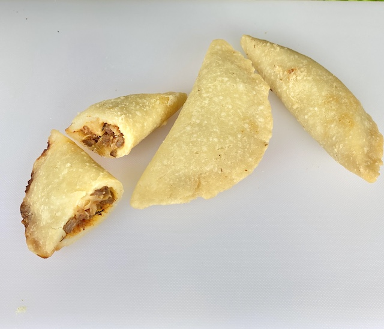

Argentinian Empanada Filling

There are as many variations of empanada as there are cooks in Argentina (though
they’re popular throughout Latin America and Spain too). I developed this version
while staying in El Salvador during covid-19 as a creative way to spend my time
and eat good food. This recipe really stands out for the simple farm theme by
including ingredients you are likely to have on hand in a well stocked rustic
kitchen. Also, to keep things simple and tasty I purposely didn’t include the
usuals like eggs or olives because I feel it’s way to many textures. This beef
and potatoes recipe shines in a rich smokey sauce with a mustard kick,
giving this recipe a deeper flavor profile.
Ingredients
The Ingredients are organized into working groups
Bowl 1
- 1 LB beef shoulder, 1/3 inch wide strips sliced 1/8-inch using a food processor
or very coarsely ground
- 2 tbsp sea salt, or smoked salt if you like the aroma
- 3 Tbsp Chicken fat and/or olive oil, or a combination.
Bowl 2
- 1/2 cup lightly caramelized onion, 1/2 inch lengths
- 2 ounces diced chorizo(never tried)
- I want to try adding peppers
Bowl 3
- Steamed potatoes, peeled and diced 1/8 inch- 2 cup(300g)
- 4 garlic cloves, mashed to a paste in a mortar
- 2 teaspoons chopped thyme
- 2 teaspoons chopped marjoram or 1 teaspoon oregano
Bowl 4
- 1 tablespoon tomato paste
- 2 tsp smoked sweet paprika
- 1/2 tsp cayenne or chili pepper or 2 whole chilies de-seeded
- 1/8 tsp red pepper flakes
- 2 tbsp mustered powder+ 1 smidgen clove + 1 smidgen allspice
- 1 cup + more, roasted Beef or chicken broth, as necessary.
Feel free to add sugar to bring out the smoky tomato flavor
- 1/2 cup red wine
Bowl 5
- ½ cup chopped chives preferred (or scallions, green parts only)
Directions
-> Preferably salt and marinate your beef on a wire mesh to drain the liquids for 10 days (yes, 10 days
in the fridge will give the meat such an amazing texture and the meat will be fine). <-
- Bowl 1- Season beef generously with salt and pepper and set aside for minimum 10
minutes. Add 3 tablespoons fat mix well, rest for 10 minutes. Heat a large heavy skillet
over medium heat. Add beef and sear until meet begins to sweat heavy 10m. Raise heat to high
and sear so moisture can evaporate, stirring throughout to keep pieces separate, about
15 minutes. Lower to heat to medium high for Browning
- Bowl 2- Add lightly caramelized onion and continue searing, about 1 minutes. Add fat if
necessary so food doesn't burn. Lower heat to medium for 2m
- Bowl 3- Add potatoes, garlic, thyme and marjoram and stir well to incorporate. (Add a little
more fat to pan if mixture seems dry.) Season again with salt and pepper and let mixture fry
for 1-2 more minutes.
- Bowl 4- Stir in tomato paste, smoked paprika, cayenne, wine and a cup of broth or two, or water.
Turn heat to simmer, stirring well to incorporate any caramelized bits. Cook for about 10 more
minutes, until both meat and potatoes are tender and the sauce coats them — juicy, not saucy
is what you want. Taste and adjust seasoning for full flavor (intensity will diminish upon
cooling).
- Bowl 5- Remove pan from heat and stir in chives, let cool to room temperature. Cover and
refrigerate or freeze immediately until ready to use.
Proceed to basic empanada recipe for dough and frying